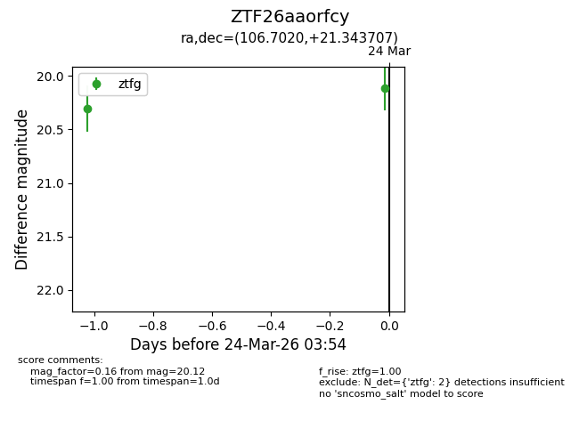
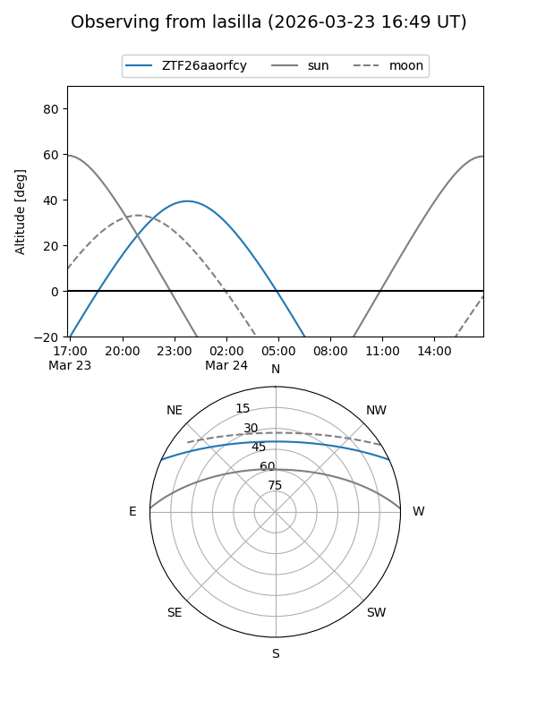
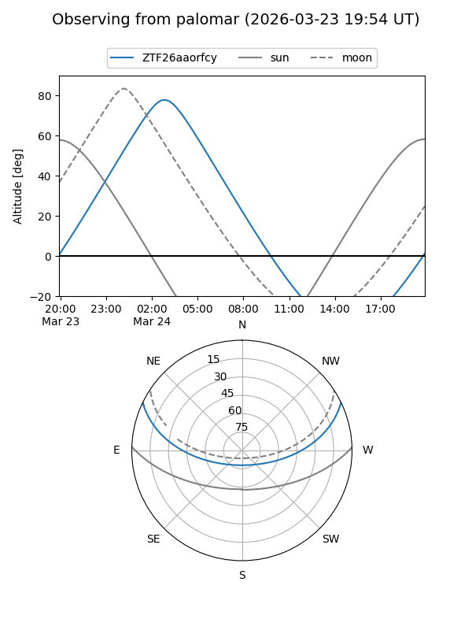
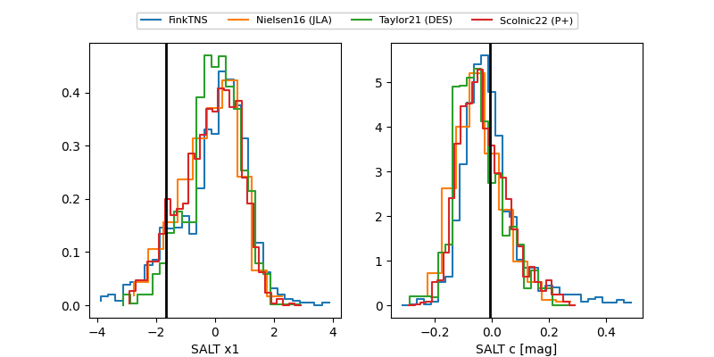

ZTF26aaorfcy
Target ZTF26aaorfcy at 2026-03-24 03:57
Aliases and brokers:
FINK: link
Lasair: link
ALeRCE: link
alt names
ZTF26aaorfcy (ztf,fink_ztf)
Coordinates:
equatorial (ra, dec) = 106.7020,+21.34371
equatorial (HMS+DMS) = 07:06:48.47,+21:20:37.34
galactic (l, b) = (195.2948,+12.79784)
Flags:
Photometry:
last ztfg=20.12
2 ztfg detections
Lightcurve

Visibility


Additional plots
